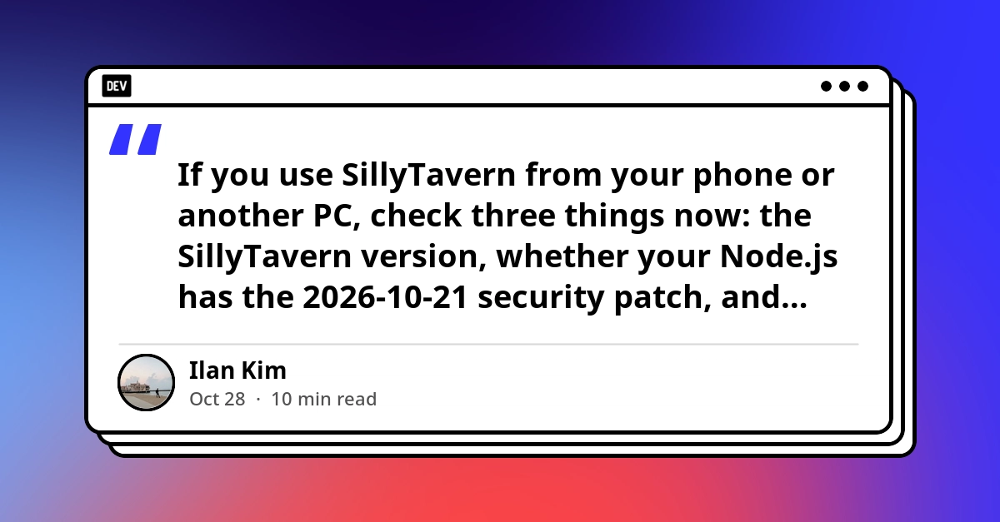
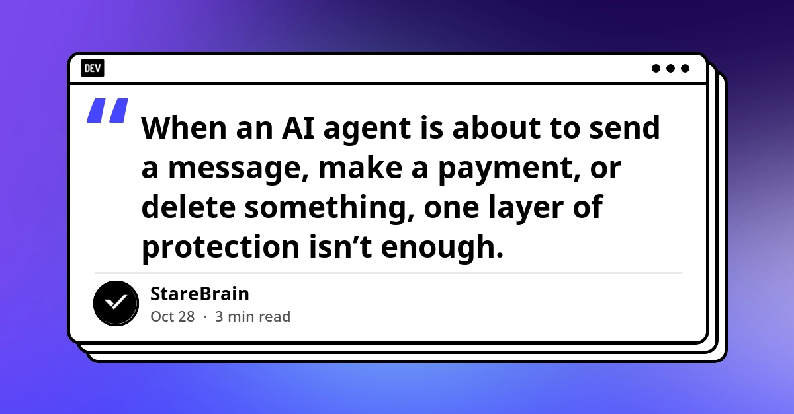
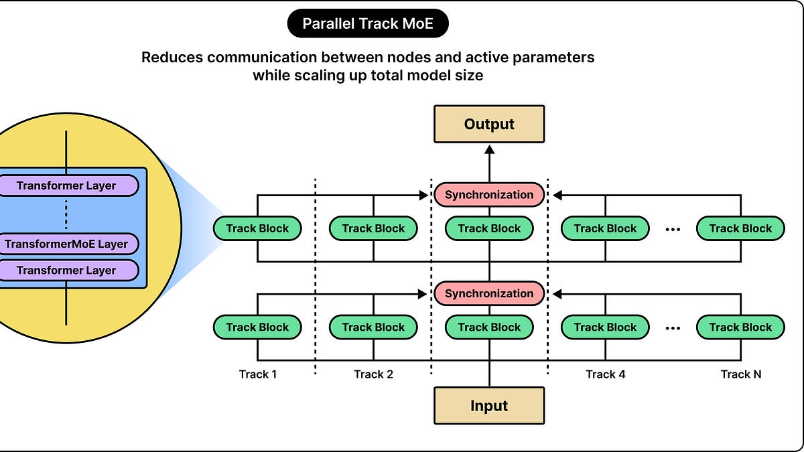
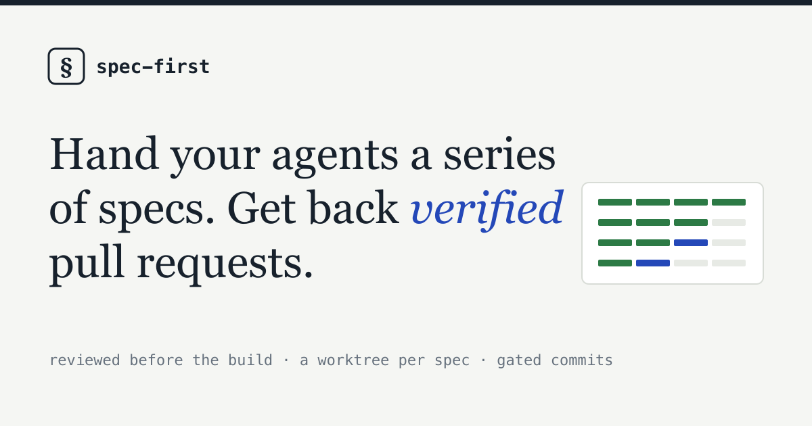
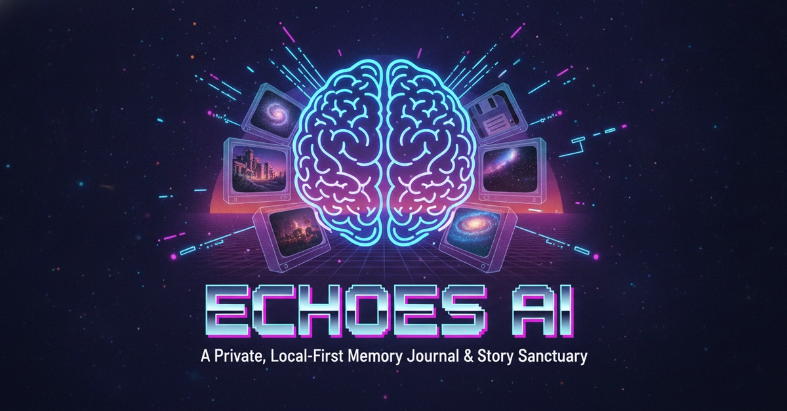

🔥 Top 3 (must read)
Node.js Brotli bug CVE-2026-111497 is now actively exploited — check your Node version
This post is written as a SillyTavern checklist, but the key part is about Node.js itself. A Node security patch shipped on 2026-10-21, CISA added the bug to its list of actively exploited vulnerabilities on 2026-10-27, and the author says some official Docker images still ship an unpatched Node as of today. Why it matters: every Node.js backend and CI runner you own needs a version check this week. Base images that pin
latest may still be unpatched.
Discovering and exploiting vulnerabilities in real-world software with Claude
Anthropic shares research on using Claude to find and exploit security bugs in real software. It shows how far coding agents have moved from "write a function" to full security work. Why it matters: the same agents your team uses for coding can also be used to audit your code. It is a good push to add an AI security pass to your review process.

Software may be getting worse, but it used to be horrible
(HN, 302 points, 317 comments) A pushback on the "software quality is falling" story. The author argues that old software was often worse, and that we only remember the good parts. Why it matters: as an EM, this is a useful frame when your team debates quality vs. speed, and when AI-generated code comes up in that debate.
B
🛠 Tools & releases
Kubernetes: Workload Conformance Working Group announced
a new group writing a shared standard for how workloads should behave at runtime on any Kubernetes cluster. They want input from app builders, not only cluster operators.
K
🤖 AI for developers
Why We Check Twice Before a Risky Action: Defense-in-Depth in an Android AI Agent
before an agent sends a message, pays, or deletes, two independent checks run: the LLM's own
requires_confirmation flag, plus a client-side keyword guard that does not trust the LLM. A clean pattern for any mobile app with agent features.
How Apple Fits an LLM on Your iPhone
ByteByteGo breaks down how a model runs on-device without hurting the phone. Good background for mobile teams thinking about on-device AI.

👔 Engineering & teams
Is my data used for model training?
(HN, 215 points, 99 comments) — Anthropic's own data-use page got a large HN discussion. If your team uses Claude Code on company code, this is the page to read before you write (or update) your internal AI-usage policy.
🎯 For me
checklist post
Node.js patch: the 2026-10-21 Node security fix is the one action item today. Check Node versions in your Dockerfiles, CI images, and local toolchains. Do not trust
latest tags, rebuild and pin. See the .two-layer confirmation pattern
Mobile agent safety: the ports directly to a Flutter app. It is also easy to cover with a test: feed the LLM a "safe" reply for a risky action and assert the client guard still blocks it.
Claude data-use page
Team AI policy: use the as the source when engineers ask "is our code used for training?".
💡 App ideas & indie builds
Spec-First Agentic Development plugin
(HN, 28 points, 18 comments) — a plugin that makes a coding agent write and agree a spec before it writes code, then proves the code matches the spec. Problem: agents jump to code and drift from what you asked. Inspiration: small workflow tools that sit on top of Claude Code or Copilot are a cheap product space right now.

Echoes AI: a private, local-first memory journal
a Hacktoberfest build for saving family stories (a grandparent's words, a recipe secret) before they are forgotten, with the data kept on the user's device. Problem: family memories are lost because nobody records them. Inspiration: "local-first + AI" is a strong angle for personal, emotional data where users do not want a cloud.

🎓 Try this
Audit your Node.js fleet for the 2026-10-21 security patch today. Run
node -v on your laptop, check the FROM node: line in each Dockerfile, and check the Node version in your CI config. Then rebuild any image that still pulls an unpatched base. The checklist post is a good template for a short internal security note.